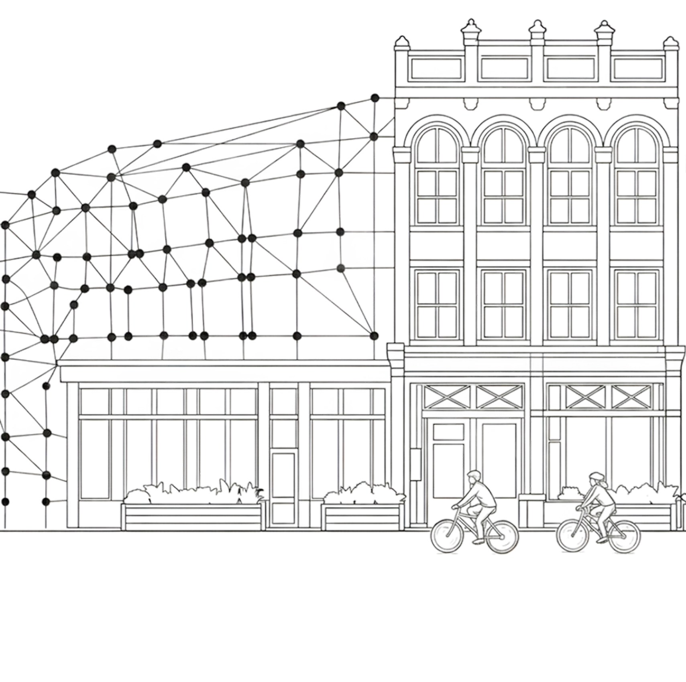
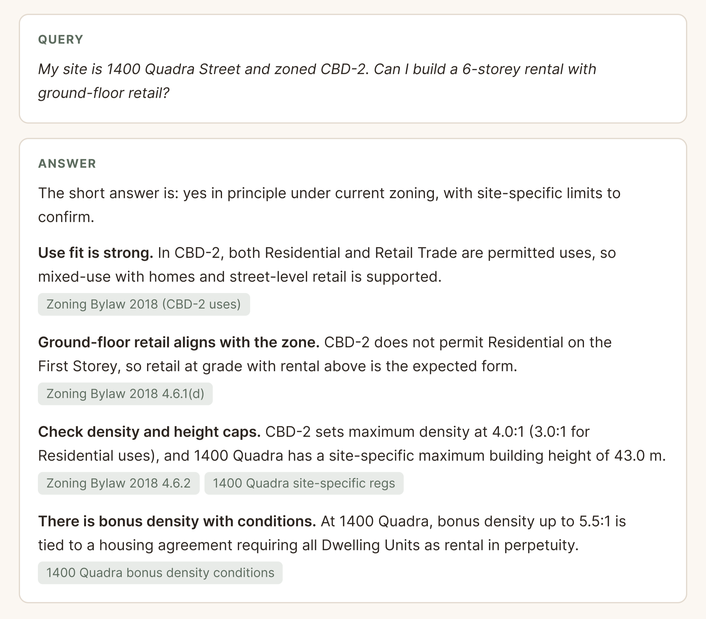
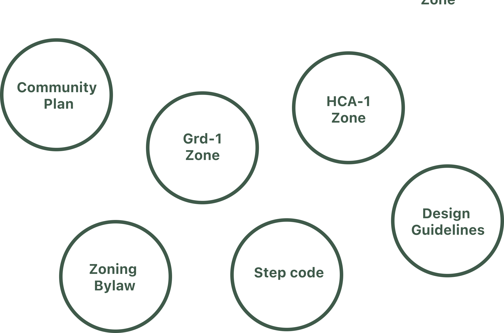

$23,642
Avg per unit costs from approval delays

Land use regulations are fragmented, opaque, and siloed. Spatial organizes them into a connected layer, searchable with natural language.
Book a CallAvg per unit costs from approval delays
Avg permitting time before approval
Canadian homes short by 2030

Type a site address or describe a project in your municipality. Spatial uses AI to search every bylaw, plan, and guideline at once. It returns what applies, flags where documents conflict, and links each statement to the exact source passage.
Spatial is a policy research tool for land use regulation. It connects zoning bylaws, design guidelines, community plans, and everything in between, so the full regulatory landscape is structured, searchable, and linked.

Spend less time cross-referencing bylaws and more time designing
Cut through zoning complexity to move projects from concept to approval faster.
One policy landscape instead of a dozen scattered documents — so every recommendation starts from the same foundation.
Consistent interpretation across departments, fewer incomplete applications, fewer revision cycles.
Land use policy is infrastructure. As foundational as roads, utilities, and transit. But unlike the built environment it governs, policy has no shared interface. It lives across platforms, formats, and institutions, connected in principle, fragmented in practice.
Large language models have changed what's possible. For the first time, the volume and complexity of policy data can be met with directed, structured access, the ability to ask a specific question and trace the answer across every document that governs it.
We think every municipality should have a queryable platform for navigating the policy that governs its built environment. A language model system as structured, accessible, and interconnected as the places and people it serves.